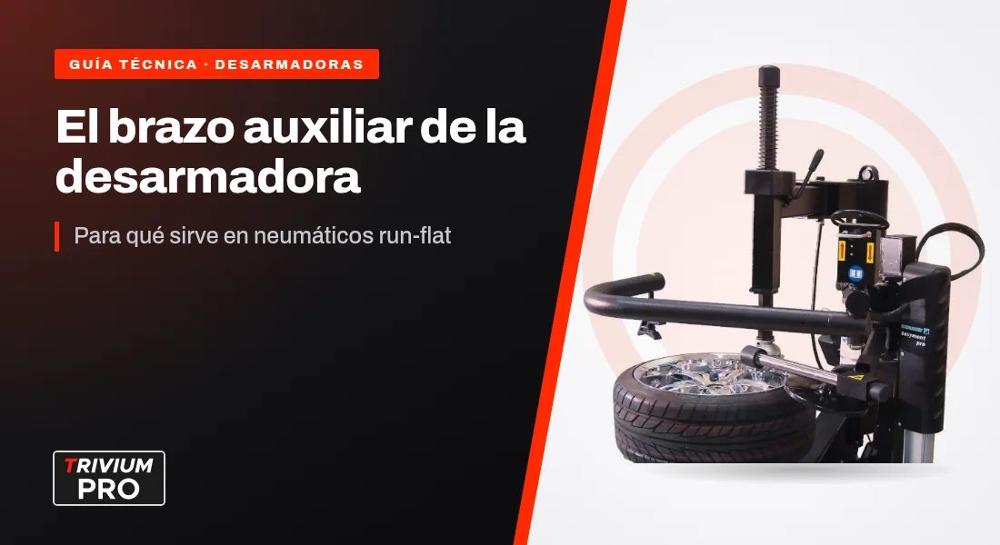

Cuando hablamos de desarmadoras de neumáticos, uno de los accesorios más valorados por los talleres modernos es el brazo auxiliar. Pero, ¿para qué sirve exactamente y cuándo conviene invertir en una máquina que lo incluya?
El desafío de los neumáticos modernos
Con el avance de la tecnología automotriz, muchos vehículos actuales vienen equipados con neumáticos de perfil bajo, run-flat o llantas de aleación que requieren un trato especial. Estos neumáticos son más rígidos y difíciles de desmontar, lo que puede poner en aprietos tanto al operario como a la máquina si no se cuenta con las herramientas adecuadas.
¿Qué es el brazo auxiliar?
El brazo auxiliar es un mecanismo adicional que se incorpora a la desarmadora, ubicado al costado del plato giratorio. Suele estar compuesto por uno o más dispositivos móviles (brazos presores, rodillos, discos de apoyo) que asisten durante el proceso de montaje y desmontaje del neumático.
¿Para qué sirve?
Estas son sus funciones principales:
- Presionar el talón del neumático: Esto facilita que el neumático se mantenga en el canal de la llanta, evitando que salte o se trabe durante el desmontaje.
- Evitar dañar llantas y cubiertas: Al ofrecer mayor control, reduce el riesgo de marcar o romper componentes, especialmente en llantas costosas o neumáticos duros.
- Aumentar la velocidad del trabajo: El operario necesita menos esfuerzo y tiempo para montar o desmontar, lo que mejora la productividad del taller.
- Reducir el esfuerzo físico: Es especialmente útil en neumáticos grandes o pesados, ayudando a cuidar la salud del técnico y evitando lesiones.
¿Cuándo conviene tener una?
El brazo auxiliar es muy recomendable si tu taller:
- Trabaja con vehículos de alta gama, deportivos o camionetas.
- Recibe neumáticos run-flat o de perfil bajo con frecuencia.
- Busca aumentar la eficiencia y cuidar el equipamiento.
- Apunta a brindar un servicio más seguro y profesional.
Conclusión
El brazo auxiliar transforma una desarmadora básica en una herramienta mucho más versátil y segura. Aunque representa una inversión adicional, se paga solo en tiempo, calidad de servicio y reducción de riesgos. Si estás por adquirir una desarmadora o querés actualizar la que ya tenés, considerá seriamente este accesorio: es un aliado clave en el trabajo diario del taller.